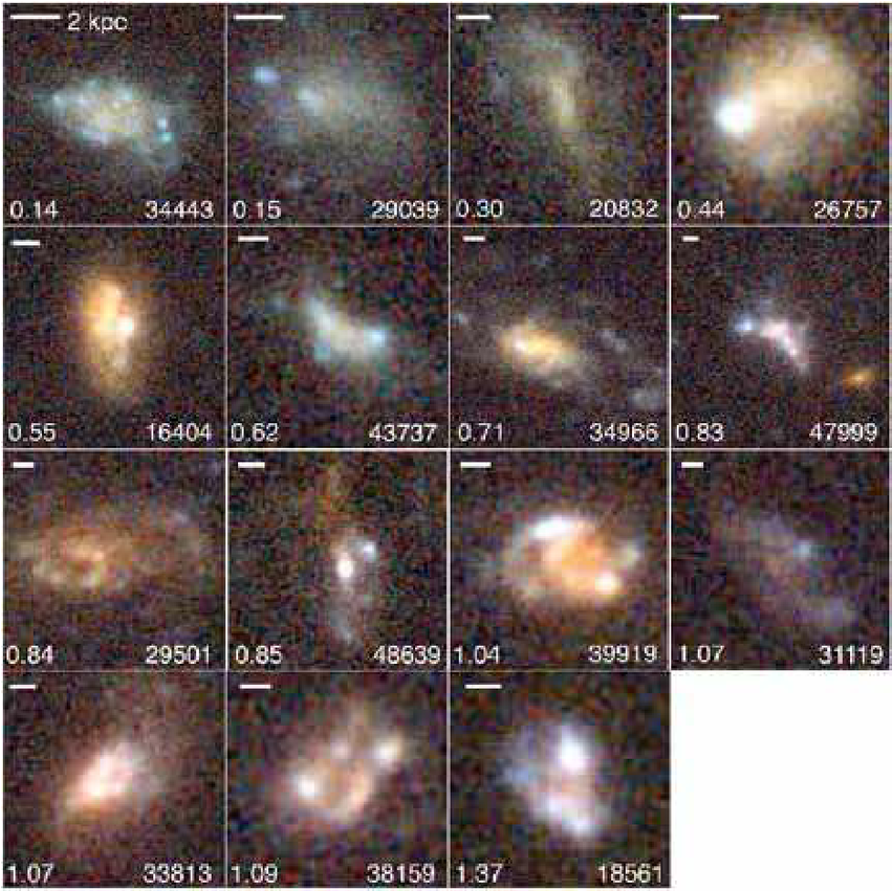

UV-continuum slopes of high-$z$ star forming clumps
Do clumps and their host galaxies evolve similarly?
Bolamperti et al. 2023b
Observed properties of high-$z$ galaxies
Galaxies at high-$z$ show a morphology different from local ones. They consist of turbulent disky structures dominated by bright blue knots, dubbed "clumps". Thanks to gravitational lensing, we can observe clump sizes of the order of hundreds of parsec, down to a few tens of parsec in extremely high-magnification regimes.
The investigation of the physical properties of galactic substructures and individual clumps hosted by high-$z$ galaxies down to the smallest scales gives unique hints to study galaxy evolution. One of the most important quantities exploited to characterize young stellar populations is the UV-continuum slope. It is commonly referred to as "$\beta$ slope", because it has been shown that the UV part of the spectrum can reasonably be fitted with a simple power-law relation, i.e., $f_\lambda \propto \lambda^\beta$.
(Image: Elmegreen et al. 2007.)
My work and results

In this project, I measured the UV-continuum $\beta$ slopes of a sample of 166 individual star-forming clumps, belonging to 67 galaxies strongly lensed by the cluster of galaxies MACS J0416.1-2403, making use of PSF-matched HST photometry for the entire sample, joint with deep MUSE spectroscopic observations for 100 clumps of the sample. The cluster of galaxies, with the clumps locations (in red) and the deep MUSE pointing (green), is shown in the figure.
The first aim of this study is to compare our novel measurements for individual clumps with those for integrated galaxies, in order to investigate possible physical differences between these regions and their hosts. We pursue it by measuring the value of the UV-continuum $\beta$ slope, which depends on different key physical parameters, such as the age, metallicity, dust extinction, IMF and SFH. As is common in analogous studies referred to high-$z$ galaxies, we investigate the trends of the $\beta$ values as a function of the redshift and the UV luminosity.
- the $\beta$ slope distribution of our sample of individual clumps shows a median value of $\sim -2.4$, bluer than the value measured in literature for integrated galaxies in the same redshift range. The bluer median value for individual clumps confirms that they are sites of star formation, populated by young, massive OB stars, whose spectrum strongly emits in the UV, but can also point out different features between the host galaxy and their clumps;
- the measured $\beta$ values show a trend with the absolute magnitude in the restframe UV, $M_{UV}$, consistent with the relation expressed by Bouwens et al. 2014 extended to much fainter magnitudes;
- we observe a weak trend of the $\beta$ values with the redshift, as observed for integrated galaxies;
- e study eight objects with very blue robust $\beta$ slope. We used the code BPASS to generate synthetic spectra of galaxies with different metallicities, SFHs, IMFs, and the possible presence of binaries. We were able to reproduce these extreme slopes by assuming low metallicity ($Z \lesssim 10^{-3}$), young ($\log{\mathrm{(age/yr)}} \lesssim 7$) and dust-poor regions, considering the absence of the nebular emission.
Images from left to right: distribution of the $\beta$ slopes of individual clumps (blue) compared with integrated galaxies from literature (grey); weak $\beta$-$z$ observed trend; $\beta$ slope maps produced with BPASS, as a function of age and metallicity.
Analysis of the D2 object
In VLT cycle 112 I was awarded as PI of 39 hours of observations with XShooter to observe one of the clumps in the sample of my previous work. This clump, called D2, is particularly interesting because it is isolated, lensed, Ly$\alpha$ emitter, and has an extremely blue $\beta = -3.0 \pm 0.5$ slope. These evidences suggest that D2 can host a very pristine stellar population. One of the aims of the proposals was to detect the He1640 line, that is an indicator of PopIII stars.D2 is part of a "cosmic Archipelago", that includes several similar and interesting objects at the same redshift. The study of this system was awarded with JWST/NIRSpec observations (see the four pointings in the figure on the left, from Messa et al. 2024). One of these pointings directly targeted D2, allowing us to access the spectral region where H$\alpha$, H$\beta$, and OIII4959,5007 are.
The XShooter observations were very recently completed and I am currently combining all this data (and more, from NIRCam, NIRISS and MUSE) to delve into the nature of D2.
Left: Overview of the NIRSpec pointing on the "islands" of the cosmic Archipelago (from Messa et al. 2024). Right: Preliminary 2D and 1D spectra of the Ly$\alpha$ from XShooter.